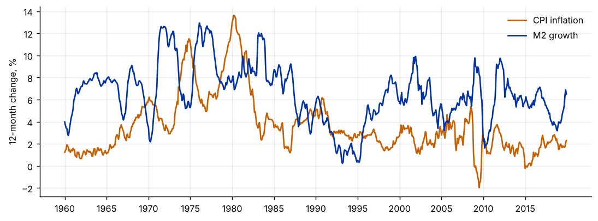
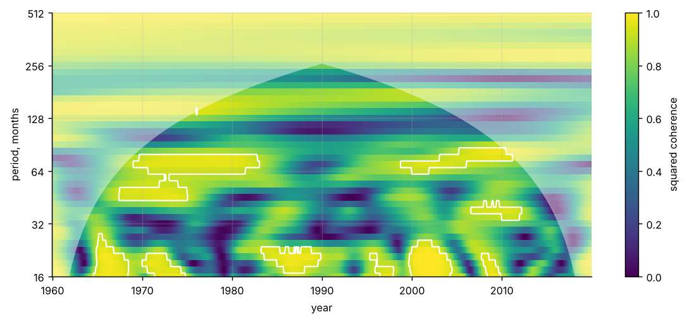

Step 1The question and the model
Do money growth and inflation move together, and does the answer depend on the horizon and on the decade? A single correlation averages over all horizons and all dates. Wavelet analysis keeps both: it measures the relation at each period (in months) and at each point in time. Our question is: at which horizons and in which decades are U.S. M2 growth and CPI inflation related, and do they move together or in opposite directions?
The Morlet wavelet transform of a series \(x_t\) at scale \(s\) and time \(\tau\) is \(W_x(\tau,s)\). The wavelet coherence of two series is
where \(S\) is a smoothing operator over time and scale, and the phase \(\phi_{xy}=\arg S(W_{xy})\) tells us whether the series move together (near 0), in opposite directions (near \(\pm\pi\)) or one behind the other. \(R^2\) lies between 0 and 1 and behaves like a local squared correlation. Without the smoothing the ratio would be exactly one everywhere.
| Symbol | Variable | Definition |
|---|---|---|
| \(x_t\) | infl |
CPI inflation, 12-month log change, percent |
| \(y_t\) | m2 |
M2 growth, 12-month log change, percent |
| period | cycle length in months, 16 to 512 |
Before you estimate anything
Wavelet coherence describes association by horizon. It does not test a causal claim or a long-run relation. Decide the range of periods you care about before you look (here 16 to 128 months, so cycles of about one to ten years), and decide what you will call significant. With overlapping 12-month changes the series are very smooth, so do not read the shortest periods.
How to write it: model section
We compute the squared wavelet coherence between 12-month M2 growth and 12-month CPI inflation, using a Morlet wavelet with central frequency six. The coherence is smoothed over time and scale. We assess significance by Monte Carlo against 300 pairs of independent AR(1) series with the same persistence as the data, and we mark the cone of influence where edge effects matter. Phase differences show whether the two series move together or in opposite directions.
Step 2Load the data and look at the series
import warnings; warnings.filterwarnings("ignore")
import numpy as np, pandas as pd
import matplotlib.pyplot as plt
from scipy.ndimage import uniform_filter1d
d = pd.read_csv("us_monthly.csv").set_index("date")[:"2019-12"]
z = pd.DataFrame({"infl": 100 * np.log(d.cpi).diff(12), "m2": 100 * np.log(d.m2).diff(12)}).dropna()
n = len(z)
print(z.index[0], "to", z.index[-1], "|", n, "months")
print(z.describe().round(2).loc[["mean", "std", "min", "max"]].T)
print("Correlation over the whole sample:", round(z.infl.corr(z.m2), 2))
for a, b in [("1960", "1979"), ("1980", "1999"), ("2000", "2019")]:
s = z[a:b]; print(f" {a}-{b}: {s.infl.corr(s.m2):5.2f}")
fig, ax = plt.subplots(figsize=(8.5, 3.2))
ax.plot(range(n), z.infl.values, color="#c46000", label="CPI inflation"); ax.plot(range(n), z.m2.values, color="#0033a0", label="M2 growth")
tk = list(range(0, n, 60)); ax.set_xticks(tk); ax.set_xticklabels([z.index[j][:4] for j in tk]); ax.set_ylabel("12-month change, %"); ax.legend(frameon=False)
plt.tight_layout()1960-01 to 2019-12 | 720 months
mean std min max
infl 3.62 2.67 -1.98 13.62
m2 6.54 2.63 0.23 12.93
Correlation over the whole sample: 0.18
1960-1979: 0.06
1980-1999: 0.29
2000-2019: -0.18
How to read it
The sample has 720 months, 1960-01 to 2019-12. Inflation averages 3.62% and M2 growth 6.54%, and both are smooth because they are 12-month changes. The correlation over the whole sample is only 0.18, and it is not stable: 0.06 in 1960–79, 0.29 in 1980–99 and −0.18 in 2000–19. A single correlation therefore hides a relation that changes sign across periods. The wavelet analysis asks whether it also changes with the horizon.
Step 3Compute the wavelet coherence
def morlet_cwt(x, scales, w0=6.0):
m = len(x); N = 1 << int(np.ceil(np.log2(2 * m)))
xf = np.fft.fft(x - x.mean(), N); om = 2 * np.pi * np.fft.fftfreq(N)
W = np.empty((len(scales), m), complex)
for k, s in enumerate(scales):
psi = np.pi ** -.25 * np.exp(-.5 * (s * om - w0) ** 2) * (om > 0) * np.sqrt(2 * np.pi * s)
W[k] = np.fft.ifft(xf * psi)[:m]
return W
def smooth(A, scales): # boxcar in time (width 2 s) and over 3 neighbouring scales
out = np.empty_like(A)
for k, s in enumerate(scales):
w = max(int(round(2 * s)), 1)
out[k] = uniform_filter1d(A[k].real, w, mode="nearest") + 1j * uniform_filter1d(A[k].imag, w, mode="nearest")
return uniform_filter1d(out.real, 3, axis=0, mode="nearest") + 1j * uniform_filter1d(out.imag, 3, axis=0, mode="nearest")
def wtc(x, y, scales):
Wx, Wy = morlet_cwt(x, scales), morlet_cwt(y, scales)
Sxy = smooth(Wx * np.conj(Wy) / scales[:, None], scales)
Sx = smooth(np.abs(Wx) ** 2 / scales[:, None], scales).real
Sy = smooth(np.abs(Wy) ** 2 / scales[:, None], scales).real
return np.abs(Sxy) ** 2 / (Sx * Sy), np.angle(Sxy)
period = np.array([16 * 2 ** (j / 8) for j in range(41)]) # 16 to 512 months
scales = period / (4 * np.pi / (6 + np.sqrt(2 + 36))) # Fourier period -> scale (Morlet, w0 = 6)
x, y = z.infl.values, z.m2.values
R, ph = wtc(x, y, scales)
# cone of influence: points farther than sqrt(2)*scale from either end
coi = np.minimum(np.arange(n), n - 1 - np.arange(n))
mask = coi[None, :] >= (np.sqrt(2) * scales)[:, None]
print(f"Periods: {period[0]:.0f} to {period[-1]:.0f} months; {mask.mean():.0%} of the time-period plane is inside the cone")
# sanity check of the phase convention: y is x delayed by 6 months
tt = np.arange(n); xs = np.sin(2 * np.pi * tt / 48); ys = np.sin(2 * np.pi * (tt - 6) / 48) # y lags x by 6 months
_, phs = wtc(xs, ys, scales); k48 = np.argmin(abs(period - 48))
print("Check: y lags x by 6 months at period 48 -> phase", round(float(np.median(phs[k48, mask[k48]])), 2), "rad =", round(float(np.median(phs[k48, mask[k48]])) / (2 * np.pi) * 48, 1), "months")Periods: 16 to 512 months; 53% of the time-period plane is inside the cone Check: y lags x by 6 months at period 48 -> phase 0.79 rad = 6.0 months
How to read it
The coherence is computed for 41 periods from 16 to 512 months. Only 53% of the time-period plane lies inside the cone of influence, because long periods need a lot of data on both sides of each date. In the check, a series delayed by six months at period 48 gives a phase of +0.79 radians, which is six months. So a positive phase means the second series (M2) lags the first (inflation), and a phase near ±π means the two move in opposite directions.
Step 4Significance by Monte Carlo
rng = np.random.default_rng(1)
def ar1_fit(v):
v = v - v.mean(); a = (v[1:] @ v[:-1]) / (v[:-1] @ v[:-1]); return a, np.std(v[1:] - a * v[:-1])
def ar1_sim(a, s, m):
e = rng.standard_normal(m + 100) * s; u = np.zeros(m + 100)
for j in range(1, m + 100): u[j] = a * u[j - 1] + e[j]
return u[100:]
(a1, s1), (a2, s2) = ar1_fit(x), ar1_fit(y)
print(f"AR(1) coefficients: inflation {a1:.3f}, M2 growth {a2:.3f}")
sims = np.array([wtc(ar1_sim(a1, s1, n), ar1_sim(a2, s2, n), scales)[0] for _ in range(300)])
c95 = np.percentile(sims, 95, axis=0)
sig = (R > c95) & mask
print(f"Share of the plane (inside the cone) with coherence above the 95% critical value: {sig.sum() / mask.sum():.1%} (5% expected under the null)")
fa = (sims > c95[None]) & mask[None]
print(f"Same share in the simulated null series: mean {fa.sum((1, 2)).mean() / mask.sum():.1%}, 95th percentile {np.percentile(fa.sum((1, 2)) / mask.sum(), 95):.1%}")
yrs = np.array([int(s[:4]) + (int(s[5:]) - 1) / 12 for s in z.index])
fig, ax = plt.subplots(figsize=(9, 4.0))
im = ax.pcolormesh(yrs, np.log2(period), R, cmap="viridis", vmin=0, vmax=1, shading="auto")
ax.contour(yrs, np.log2(period), sig.astype(float), levels=[.5], colors="white", linewidths=1.2)
cone = np.log2(np.maximum(np.minimum(coi, 1e9) / np.sqrt(2) * (4 * np.pi / (6 + np.sqrt(2 + 36))), period[0]))
ax.fill_between(yrs, np.log2(period[-1]), np.maximum(cone, np.log2(period[0])), color="white", alpha=.45, lw=0)
ax.set_ylim(np.log2(period[0]), np.log2(period[-1]))
yt = [16, 32, 64, 128, 256, 512]; ax.set_yticks(np.log2(yt)); ax.set_yticklabels(yt); ax.set_ylabel("period, months"); ax.set_xlabel("year")
fig.colorbar(im, ax=ax, label="squared coherence"); plt.tight_layout()AR(1) coefficients: inflation 0.991, M2 growth 0.985 Share of the plane (inside the cone) with coherence above the 95% critical value: 12.6% (5% expected under the null) Same share in the simulated null series: mean 5.0%, 95th percentile 9.9%

How to read it
The series are very persistent (AR(1) coefficients 0.991 and 0.985), so high coherence arises easily by chance. Against 300 pairs of independent AR(1) series with the same persistence, 12.6% of the plane inside the cone is above the 95% critical value. Five percent is expected under the null, and the null simulations themselves exceed 9.9% in only 5% of draws, so the excess is real but modest. In the figure, the white contour encloses a few islands: short periods (about 16 to 25 months) in the 1960s, 1970s, mid-1980s, around 2000 and 2008, and longer periods (about 40 to 80 months) in the late 1960s and 1970s and in the 2000s. Most of the map is below the critical value, even where the coherence looks high (yellow-green). The critical value is about 0.9, so colour alone says little.
Step 5Turn the picture into numbers: by period, by decade and by phase
k_all = [np.argmin(abs(period - p)) for p in (16, 32, 64, 128)]
rows = []
for p_, k in zip((16, 32, 64, 128), k_all):
m_ = mask[k]
rows.append((p_, R[k, m_].mean(), c95[k, m_].mean(), (R[k, m_] > c95[k, m_]).mean(), np.angle(np.exp(1j * ph[k, m_]).mean())))
print(pd.DataFrame(rows, columns=["period (months)", "mean coherence", "mean 95% cv", "share significant", "mean phase (rad)"]).round(2).to_string(index=False))
band = (period >= 32) & (period <= 128)
print("\nMean coherence, periods 32 to 128 months, inside the cone")
for lo, hi in [(1960, 1970), (1970, 1980), (1980, 1990), (1990, 2000), (2000, 2010), (2010, 2020)]:
s = (yrs >= lo) & (yrs < hi)
vals = R[np.ix_(band, s)]; ok = mask[np.ix_(band, s)]
print(f" {lo}-{hi}: {vals[ok].mean():.2f} (share significant {(sig[np.ix_(band, s)].sum() / max(ok.sum(), 1)):.0%}, points in the cone-free area {ok.sum()})")
# phase in the significant region of the 32-128 month band (phase of inflation relative to M2)
ss = sig[band]; pp = ph[band][ss]
print(f"\nSignificant points in the 32-128 month band: {ss.sum()}")
print(f" share with |phase| < 90 degrees (in phase): {(np.abs(pp) < np.pi / 2).mean():.0%}; share with |phase| > 90 degrees (anti-phase): {(np.abs(pp) > np.pi / 2).mean():.0%}")
print(f" circular mean phase: {np.angle(np.exp(1j * pp).mean()):.2f} rad ({np.degrees(np.angle(np.exp(1j * pp).mean())):.0f} degrees)") period (months) mean coherence mean 95% cv share significant mean phase (rad)
16 0.77 0.94 0.26 -3.06
32 0.50 0.91 0.00 3.12
64 0.80 0.91 0.28 2.09
128 0.53 0.92 0.00 -2.25
Mean coherence, periods 32 to 128 months, inside the cone
1960-1970: 0.73 (share significant 14%, points in the cone-free area 550)
1970-1980: 0.70 (share significant 27%, points in the cone-free area 1895)
1980-1990: 0.57 (share significant 4%, points in the cone-free area 2040)
1990-2000: 0.52 (share significant 1%, points in the cone-free area 2040)
2000-2010: 0.71 (share significant 15%, points in the cone-free area 1895)
2010-2020: 0.70 (share significant 13%, points in the cone-free area 550)
Significant points in the 32-128 month band: 1043
share with |phase| < 90 degrees (in phase): 1%; share with |phase| > 90 degrees (anti-phase): 99%
circular mean phase: 2.52 rad (144 degrees)How to read it
By period, the mean coherence is 0.77 at 16 months, 0.50 at 32, 0.80 at 64 and 0.53 at 128, but the mean 95% critical value is about 0.9 at all of them, and the share of significant points is 26%, 0%, 28% and 0%. The mean phase is close to ±π at 16 and 32 months (−3.06 and 3.12 radians) and about 2.1 to −2.3 radians at 64 and 128 months, so where the series are related they move in opposite directions. By decade, the mean coherence in the 32–128 month band is 0.73 in the 1960s, 0.70 in the 1970s, 0.57 in the 1980s, 0.52 in the 1990s and about 0.70 after 2000. The 1980s and 1990s have almost no significant points (4% and 1%) against 27% in the 1970s. The first and last decades have few points outside the cone, so be careful with them. Of the 1,043 significant points in the 32–128 month band, 99% are in anti-phase, with a circular mean phase of 144 degrees. This fits the signs of the sub-sample correlations: where co-movement exists at these horizons, faster M2 growth goes with slower inflation, not faster.
How to write it: results
The correlation between 12-month M2 growth and CPI inflation is 0.18 over 1960–2019 but changes from 0.06 to 0.29 to −0.18 across the three twenty-year sub-periods. Wavelet coherence shows that the relation is concentrated at specific horizons and dates: 12.6% of the time-period plane inside the cone of influence is significant at 5%, against 5% expected from 300 independent AR(1) simulations, at short periods (16 to 25 months) and at 40 to 80 months, the latter in the late 1960s, the 1970s and the 2000s. Almost none is significant in the 1980s and 1990s (4% and 1% of the points in the 32–128 month band). Where coherence is significant, the series are mostly in anti-phase (99% of significant points in the 32–128 month band). We therefore find no stable positive co-movement between money growth and inflation at these horizons.
Step 6What to report in the paper
| Item | What to show |
|---|---|
| Wavelet and smoothing | Morlet, central frequency, smoothing windows, the range of periods |
| Figure | coherence map with the cone of influence and the 95% contour |
| Significance | Monte Carlo design: the null model, the number of replications and the share of the plane that is significant, compared with 5% |
| Numbers | average coherence by period and by sub-period, not only a picture |
| Phase | the phase, with the sign convention checked on a test signal |
| Next step | a regression or VAR at the horizon the map points to, since coherence is not an effect size |
Common mistakes
- Reading colour outside the cone of influence. Edge effects make coherence unreliable there. Mask it or shade it.
- Reading pointwise significance as a finding. With thousands of points, some are significant by chance. Compare the share of the plane that is significant with what the null series give.
- Using persistent series without a persistent null. Smooth series produce high coherence by chance. Use AR(1) surrogates that match the persistence, as here.
- Getting the phase sign wrong. Conventions differ between packages. Test it on a signal with a known lead.
- Treating coherence as a regression coefficient. It says nothing about size or direction of an effect, only about co-movement at a horizon.
- Using overlapping changes at the shortest periods. Twelve-month changes are smooth by construction, so start at periods longer than 12 months.